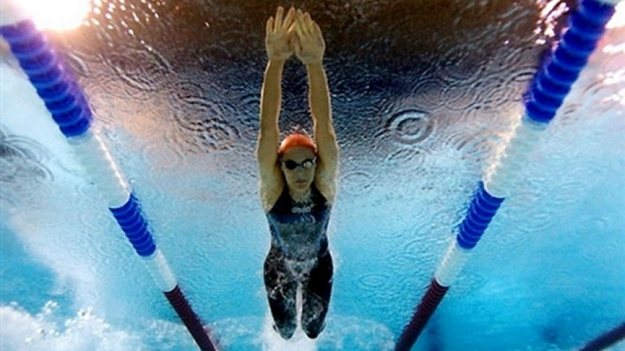

Swimming
Swimming - sport or sports discipline, which consists in overcoming swim in the shortest time of different distances.
Drawings on archaeological finds show, that people in Ancient Egypt, Assyria, Phoenicia and many other countries were able to swim for several millennia before our era, and known them ways the passage reminded the modern front crawl and breaststroke. At that time, swimming was purely applied — when fishing, hunting for waterfowl, underwater fishing, in military Affairs. In Ancient Greece, swimming was used as an important means of physical education.

Types of swimming
Freestyle
Freestyle - discipline of swimming, in which the swimmer is allowed to swim by any means, arbitrarily changing them during the distance. Currently, all swimmers use the rabbit.
During the development of swimming the following styles were used:
Backstroke
Back swimming for the first time
it was included as an independent species at the 1900 Olympic games.
In the early years, swimmers used an inverted breaststroke. The first major
success in swimming crawl on his back made the American Harry Hebner, who won
at the Olympic games of 1912; then, in the backstroke, the freestyle quickly
replaced brass.
Start in swimming on the back is made of water: a sportsman to face the bedside table, holding with both hands starting handrails, feet resting against the side of the pool. Excluding the moment of turning, the athlete should float on the back; " normal back position may include rotational movement of the body in the horizontal plane up to 90° inclusive; the position of the head is not regulates.» The athlete can be completely submerged in water only "during turn, at the finish and at a distance of not more than 15 m after the start and each turn".
Brass, butterfly
Swimming breaststroke became an independent type of program at the Olympic games in 1904. In the mid-1930s in the US and (later) in the USSR there is a new, faster variety of brass - butterfly, who replaced the classic brass. Since 1953 year the FINALS have identified the butterfly as its own discipline (in the USSR, such a division occurred in 1949).

Morozov I.S. EVT-16bzu